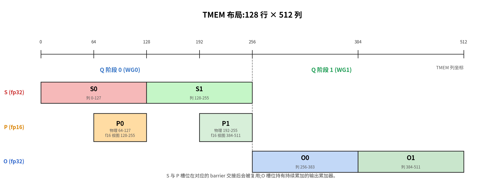
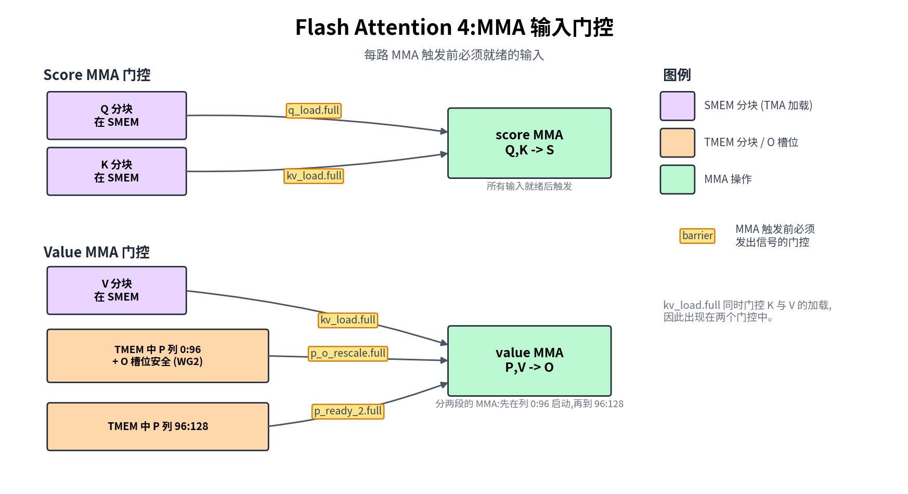
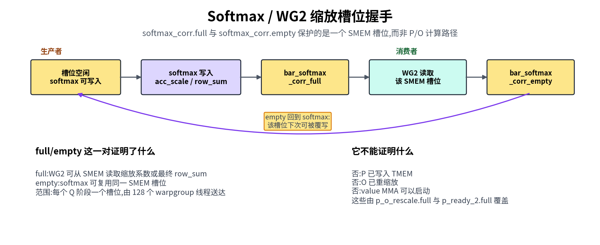
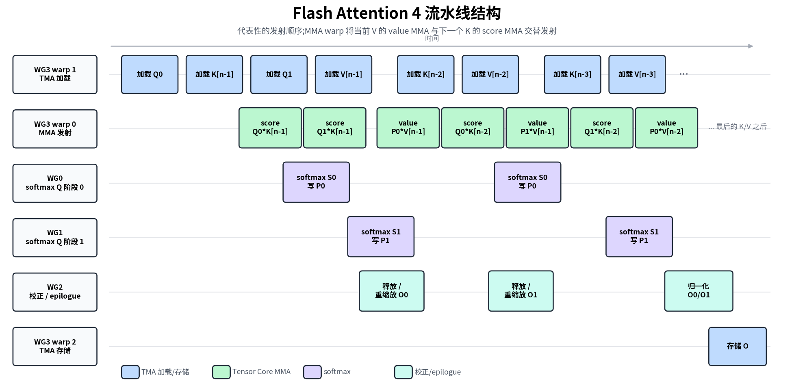

Flash Attention 4#
Overview
Attention runs two MMAs with softmax wedged between them, so it cannot just repeat one MMA the way GEMM does.
The kernel composes the hardware primitives from Part I (TMA,
tcgen05, TMEM, barriers) and the GEMM techniques from Part III with warp roles, online-softmax rescaling, causal masking, and GQA.
Attention is the kernel that decides whether a transformer runs at all, and it is also where everything we built so far finally has to work together. Every piece we assembled for GEMM carries over here: TMA tile movement, tcgen05 MMA, TMEM, warpgroup register tiles, and explicit barriers.
The challenge is that attention is not one MMA repeated. It is two MMAs with real work wedged between them: online softmax, causal masking, and the rescaling that keeps earlier and later blocks in a common scale.
That middle stage is where the new difficulty lives. A plain matmul only adds to its accumulator; attention has to revisit and rescale results it already computed as new keys and values stream in. The softmax work itself also runs on CUDA cores between the two Tensor Core MMAs, so exponentials and row-wise reductions sit directly on the critical path.
That is why so much of attention optimization is really softmax optimization: reformulating exp, and overlapping softmax with the MMAs instead of stalling on it.
Our goal in this chapter is not to re-derive Flash Attention from scratch. We will keep just enough of the algorithm in view to make the kernel readable, and then spend our attention on the part that is genuinely new: how that algorithm turns into TIRx.
The clearest way in is to follow a single tile as it flows through the kernel. Q, K, and V enter as input tiles, loaded from GMEM into SMEM. The score MMA multiplies Q and K into a score tile S in TMEM. Softmax turns S into a numerator tile P, and the value MMA combines P and V to update the output accumulator O.
So far this looks like two matmuls glued together, but there is one twist that GEMM never had to deal with: whenever the running softmax maximum changes, the O accumulated so far is suddenly in the wrong scale. It must be rescaled before the next value MMA can safely add into it. The sections below trace this path first, and only then show how TIRx hands each stage to a warpgroup and wires the stages together.
Algorithm Shape#
Before we can place tiles in memory, we need the algorithm those tiles serve. For one query block, Flash Attention computes:
Read literally, the formula says to form the full score matrix S = QKᵀ, softmax it, then multiply by V. That is the one approach we cannot use, because the full S is enormous. At seq=4096 it holds roughly 16M elements per head, about 64 MB in fp32, which is orders of magnitude larger than SMEM or the single 128×512 TMEM region. There is simply nowhere on-chip to put it. Flash Attention’s answer is to never materialize S at all. Instead it streams K/V in blocks and carries three per-row running states that summarize everything seen so far:
row_max: the maximum score seen so far.row_sum: the running denominator of softmax.O: the running output accumulator.
The streaming update is what keeps those states correct as new blocks arrive. The subtlety is that each time we process a block, the running max may rise, and once it does, everything we computed under the old max is now on the wrong scale. So before adding the new contribution, we first pull the old state back into the new scale:
S = Q_block @ K_block.T
m_new = max(row_max, rowmax(S))
scale = exp((row_max - m_new) / sqrt(d))
P = exp((S - m_new) / sqrt(d))
row_sum = row_sum * scale + rowsum(P)
O = O * scale + P @ V_block
row_max = m_new
The single scale factor does double duty here: it rescales both the running denominator and the running output, so that the contributions from earlier and later blocks finally end up measured in a common scale.
The pseudocode above is written with natural exp and an explicit /sqrt(d) because that is easiest to read, but the kernel takes a cheaper route. It folds both 1/sqrt(d) and log2(e) into one constant scale_log2 = log2(e)/sqrt(d) and evaluates every exponential with the hardware exp2 on raw scores, using the identity exp(x/sqrt(d)) = exp2(x · scale_log2). The motivation is simply that exp2 is faster than a natural exp on this hardware.
One point is worth pinning down before we go on: P here is not the final normalized attention matrix. It is only the softmax numerator for the current K/V block. The normalization is deliberately deferred, and only after the last block does the kernel write O / row_sum.
For TIRx, knowing what the algorithm computes is only half the picture. The other half is where each tile lives as the kernel runs, because that is what dictates the layout and barrier code. S, P, and O are all tile values, and each one has a home:
Sis the score tile. The score MMA writes it to TMEM.Pis the softmax numerator tile. Softmax readsSfrom TMEM into registers, computesP = exp((S - m_new) / sqrt(d)), and writesPback to TMEM.Ois the output accumulator tile. The value MMA readsPfrom TMEM andVfrom SMEM, then accumulates intoOin TMEM.
The rescale we flagged earlier is also a tile operation, not a piece of scalar bookkeeping: when row_max changes, the old O is read from TMEM, multiplied in registers, and written back to TMEM before the next value MMA accumulates into it. Every later section follows that same structure: a tile placement, a hardware path, and the barrier that proves the next consumer may run.
Tile-Primitive Graph#
With the running states and their homes in hand, we can lay the algorithm out as a concrete sequence of tile moves. For one K/V block, the kernel walks this tile path top to bottom:
Q, K, V in GMEM
-> Q, K, V in SMEM by TMA load
-> S in TMEM by score MMA: QK^T
-> P in TMEM by softmax numerator: TMEM -> RF -> TMEM
-> O in TMEM by value MMA: P V
-> O in GMEM by normalization, SMEM staging, and TMA store
The difference from GEMM comes down to a single line. GEMM is one MMA chain repeated; FA4 has two MMA phases with softmax sitting in the middle of the chain. Almost everything else that follows is a consequence of that one extra stage.
If we expand the short path into explicit producer-consumer edges, we get the full graph:
Stage |
Tile movement or compute |
TIRx primitive |
Hardware path |
|---|---|---|---|
Load Q/K/V |
GMEM tiles -> SMEM tiles |
|
TMA load |
Score MMA |
Q in SMEM and K in SMEM -> score tile |
|
|
Softmax read |
|
|
|
Softmax write |
numerator tile |
|
TMEM store, followed by |
Value MMA |
|
|
|
Correction |
|
TMEM readback, register multiply, TMEM store |
|
Epilogue |
final |
TMEM readback, |
|
The new rows are softmax and correction. Both add TMEM -> register -> TMEM traffic, and both create extra handoffs between the score MMA and the value MMA.
Try with your agent: Ask it to trace only the short path above. For each arrow, name the producer stage, consumer stage, source tile, destination tile, and hardware path. Then ask which arrows did not exist in the GEMM chapters.
Warp Roles and Scopes#
With the data path settled, the natural next question is who actually runs each stage. Each CTA here has 4 warpgroups, 512 threads in all, and they are split not by which data they touch but by what kind of work a warpgroup does:
WG3 drives the hardware engines: TMA load, MMA, and TMA store.
WG0, WG1, and WG2 do the register-heavy math that happens between those engine calls: softmax, correction, and epilogue.
The exact role table is:
Owner |
Role |
What it does |
|---|---|---|
WG3, warp 1 |
TMA load |
Loads Q, K, and V tiles from GMEM to SMEM |
WG3, warp 0 |
MMA |
Issues both score MMA and value MMA |
WG3, warp 2 |
TMA store |
Stores final O tiles from SMEM to GMEM |
WG0 |
Softmax for Q stage 0 |
Reads S from TMEM, computes P, writes P to TMEM |
WG1 |
Softmax for Q stage 1 |
Same work for the second Q pipeline stage |
WG2 |
Correction and epilogue |
Rescales O in TMEM, normalizes, stages output |
It is easy to misread the “two Q stages” as two attention heads, but they are not. They are simply two slots in the Q pipeline, with WG0 owning one and WG1 the other, so that two Q tiles can be in flight at the same time. That is the reason the softmax work appears twice, once on WG0 and once on WG1.
The code picks these roles out with symbolic coordinates:
wg_id = T.warpgroup_id([4])
warp_id = T.warp_id_in_wg([4])
When you read the kernel, find the role branch first. It tells you which team owns every tile primitive nested inside it.
WG3 warp 1 starts TMA load commands. One elected lane issues the copy, and the TMA engine moves the tile.
WG3 warp 0 issues the
tcgen05.mmainstructions.WG0 and WG1 run softmax under full warpgroup scope.
WG2 runs correction and epilogue work under full warpgroup scope.
One asymmetry ends up shaping the entire barrier graph: every MMA, both score and value, issues from WG3 warp 0 alone. WG0 and WG1 never issue an MMA at all. They only consume the score tile, run softmax, and write P back to TMEM.
This separation is precisely why softmax needs barriers around it. s_ready carries the score tile from the MMA warp over to softmax; p_o_rescale carries P and an O slot that is safe for the value MMA, either already rescaled or released because no rescale was needed. We will keep returning to those two names for the rest of the chapter.
Reading the Fragments#
The fragments in this chapter are excerpts from flash_attention4.py, so they inevitably reference names defined in parts of the kernel we do not reproduce. The self-describing ones (wg_id, warp_id, BLK_M/BLK_N, HEAD_DIM, kv_stage, the SMEM_PIPE_DEPTH_* / TMEM_PIPE_DEPTH depths, should_accumulate, and CTA_GROUP (1 here)) we introduce where they first matter below. The rest get a one-line gloss in the table here, so you have somewhere to look the moment a fragment puts an unfamiliar name in front of you:
Name |
Meaning |
|---|---|
|
Q pipeline stage, 0 or 1, i.e. which Q tile slot ( |
|
score/output tile width in TMEM columns (128) |
|
MMA inner-K step in |
|
split point of the value-MMA schedule (see The Two MMA Phases); the first value MMA covers columns |
|
WG2 per-row flag: whether the old |
|
skip threshold for small row-max changes; the current kernel uses |
|
the softmax scale in log2 units, |
|
per-row rescale factor softmax passes to WG2 through the SMEM mailbox |
|
column range of the 32-wide softmax chunk being read / written |
The Two MMA Phases#
For each streamed K/V tile, Flash Attention runs two MMA phases with softmax bridging them:
Q, K -> score MMA -> S
S -> softmax -> P
P, V -> value MMA -> O
Think of this as a pipeline of three producers in a row. The first MMA produces the attention scores S, softmax turns S into the numerator P, and the second MMA consumes P to update the output accumulator O. The normalization by row_sum is held back to the epilogue, once every K/V tile has had its say.
Each tile op below gets the same scope / layout / dispatch card we used for the GEMM steps, with one extra line, Handoff, that names the barrier(s) passing the tile to the next role.
The compute code never speaks in raw TMEM column numbers. Instead the kernel carves its single TMEM allocation into per-stage views (S_region, P_region, O_region) and indexes them by pipeline stage (S_region[q_stage], O_region[i_q], P_region[i_q, 0:K_SPLIT]). Those views are defined with T.TMEMStages in the TMEM Layout and Reuse section; for now it is enough to treat each region as a named slice of the same physical TMEM.
Score MMA#
The first of the two phases is the score MMA, the matmul that opens every K/V iteration. It computes:
and writes the 128 x 128 score tile to TMEM:
Tx.warp.gemm_async(
S_region[q_stage],
Q_smem[q_stage, 0:BLK_M, 0:HEAD_DIM],
K_smem[kv_stage, 0:BLK_N, 0:HEAD_DIM],
dispatch="tcgen05",
cta_group=CTA_GROUP,
)
if T.ptx.elect_sync():
s_ready.arrive(q_stage)
We can ask the same four questions the GEMM chapters asked of every tile op: who runs it, where the tiles live, how it dispatches, and how it hands off:
Tile-primitive readout: Score MMA
Scope: WG3 warp 0 issues it; one elected lane arrives
s_ready.Layout: Q, K in SMEM →
Sin TMEM (S_region[q_stage]).Dispatch:
tcgen05.Handoff:
s_ready(→ softmax).
The single elected thread arriving on s_ready is the entire handoff. It announces that this score tile is finished and that the softmax warpgroup is now free to read it.
Softmax Between MMAs#
Between the two MMAs sits softmax, the stage that turns the score tile S into the numerator tile P. Its readout card is:
Tile-primitive readout: Softmax
Scope: WG0 (Q stage 0) / WG1 (Q stage 1), full warpgroup.
Layout:
Sin TMEM → registers →Pin fp16 TMEM (P_region[wg_id]).Dispatch:
tcgen05.ldto read, TMEM store to write; row-wise math in registers between them.Handoff: waits
s_ready; arrivesp_o_rescale(first 96 columns) andp_ready_2(last 32).
This stage is the one with no GEMM counterpart at all. WG0/WG1 wait for the score tile to arrive on s_ready, then read it out of TMEM a register-sized chunk at a time:
Tx.copy_async(
s_chunk[:, chunk_start : chunk_end],
S_region[wg_id, chunk_start : chunk_end],
)
That is a TMEM-to-register tile read under warpgroup scope. Now that the scores are sitting in registers, the softmax warpgroup does three things, in order:
computes the row max and row sum,
computes the softmax numerator tile
P,writes
Pback to TMEM as fp16.
The last step looks like:
Tx.copy_async(
P_region[wg_id, p_start : p_end],
p_chunk[:, p_start : p_end],
)
Why write P back to TMEM at all, when we just finished computing it in registers? Because the value MMA needs P as a tile operand, and an MMA cannot read scattered per-thread scalar registers as a matrix. The MMA-readable form of P in this kernel is P_region, a view over the fp16 TMEM alias tmem_as_f16. So the writeback is not redundant motion; it is what puts P into the only shape the next MMA can actually consume.
Value MMA#
The second phase, and the one that closes each K/V iteration, is the value MMA. It computes:
By the time this MMA runs, O has already been put into the right state for the current K/V block, initialized on the first block, rescaled on later ones, so all the MMA has to do is accumulate. What sets it apart from GEMM is where the operands live: the A operand is P in TMEM, the B operand is V in SMEM, and the accumulator O is in TMEM as well:
# First sub-MMA: columns 0:K_SPLIT (the first 96 of P / rows of V).
Tx.warp.gemm_async(
O_region[i_q],
P_region[i_q, 0:K_SPLIT],
V_smem[kv_stage, 0:K_SPLIT, 0:HEAD_DIM],
transB=True,
accum=should_accumulate,
dispatch="tcgen05",
cta_group=CTA_GROUP,
)
# The second sub-MMA (same form, accum=True, gated on p_ready_2) covers the
# remaining columns K_SPLIT:BLK_N.
Tile-primitive readout: Value MMA
Scope: WG3 warp 0.
Layout:
Pin TMEM + V in SMEM →Oin TMEM (O_region[i_q]).Dispatch:
tcgen05with a TMEM operand.Handoff: waits
p_o_rescale,p_ready_2,kv_load.full; arriveso_ready(→ epilogue).
This operand placement is the hardware difference between the two MMAs:
Score MMA reads both operands from SMEM: Q and K.
Value MMA reads one operand,
P, from TMEM.Value MMA reads the other operand, V, from SMEM.
The result accumulates into
Oin TMEM.
The accum=should_accumulate flag is what implements the “initialize or add” choice from the algorithm: it is false on the first K/V tile of a query block and true on every tile after that.
You may also notice that the value MMA is not run as one shot but split into a 96 + 32 schedule:
Softmax writes
Pin four 32-column chunks.As soon as the first three chunks are ready, the value MMA starts on the first 96 columns of
Pand the matching rows ofV.The final 32 columns wait for
p_ready_2.A second MMA consumes that final chunk and finishes the tile.
The reason for the split is to keep the Tensor Core busy. Run the value MMA as a single instruction and the whole phase would stall until all four 32-column P chunks had been exponentiated and stored. By firing on the first three chunks right away, the kernel overlaps the last chunk’s exp and TMEM write with a 96-wide MMA that is already in flight, turning what would otherwise be idle time into useful work.
TMEM Layout and Reuse#
All of S, P, and O have to share one 128 x 512 TMEM allocation, and the way they are packed into it is exactly why barriers and layout turn out to be inseparable in this kernel:
The figure below shows that packing directly: score slots, numerator slots, and output slots all share one TMEM allocation, so the barrier protocol is what makes the reuse legal.

The figure reads as a set of tile slots:
Score slots hold
S = QK^T.Numerator slots hold the
Ptile after the softmax exponentiation step.Output slots hold the fp32
Oaccumulator.
These are not independent buffers. They are regions of the same allocation, and the sharing is not a stylistic choice but a forced one. With Q-pipeline depth 2, the two S slots (2 × MMA_N = 256 columns) and the two O slots (2 × MMA_N = 256 columns) already account for all 512 fp32 columns. There is nothing left over for P, so P has no choice but to alias the same bytes through a narrower fp16 view. The only reason this is safe is that each region is reused strictly after its previous consumer has finished, and that timing is exactly what the barriers guarantee. So in FA4 the barriers are not merely scheduling; they are what makes the layout legal in the first place.
The aliasing trick is set up through a T.TMEMPool. The kernel takes one fp32 view (tmem) for the score and output accumulators, then rewinds the pool base back to 0 and takes a second, fp16 view (tmem_as_f16) over the same physical bytes:
tmem_pool = T.TMEMPool(pool, total_cols=N_COLS_TMEM, cta_group=CTA_GROUP, tmem_addr=tmem_addr)
tmem = tmem_pool.alloc((128, N_COLS_TMEM), "float32")
tmem_pool.move_base_to(0)
tmem_as_f16 = tmem_pool.alloc((128, N_COLS_TMEM * 2), "float16")
tmem_pool.commit()
Because fp16 elements are half as wide, the fp16 view exposes twice as many indexable columns over those same bytes, and that is precisely the space P lives in, space the fp32 layout had no room for. With both views in hand, the kernel carves the S, P, and O slots out as staged regions with T.TMEMStages, which lets the compute code index by pipeline stage rather than by raw columns:
S_region = T.TMEMStages(tmem, col_start=0, width=MMA_N, stages=SMEM_PIPE_DEPTH_Q, stride=MMA_N)
O_region = T.TMEMStages(tmem, col_start=MMA_N * SMEM_PIPE_DEPTH_Q, width=MMA_N, stages=SMEM_PIPE_DEPTH_Q, stride=MMA_N)
P_region = T.TMEMStages(tmem_as_f16, col_start=MMA_N, width=BLK_N, stages=SMEM_PIPE_DEPTH_Q, stride=MMA_N * 2)
The * 2 in P_region’s stride is the one place the aliasing visibly leaks into the code. S_region and O_region are measured in fp32 tmem columns, while P_region is measured in fp16 tmem_as_f16 columns, which are half as wide, so stage-to-stage movement needs the doubled stride to land on the same physical bytes. Once the regions are defined, though, the compute code stays clean: it writes S_region[q_stage], reads S_region[wg_id, ...], writes P_region[wg_id, ...], and accumulates into O_region[i_q], never once touching a raw column index.
Try with your agent: Ask it to explain the fp32 (tmem) and fp16 (tmem_as_f16) views in this FA4 kernel. Which physical TMEM regions hold S, P, and O, and why does P_region’s stride use MMA_N * 2? Save the reuse question for the next section: after the barrier table, check which consumers must finish before each region can be reused.
How Barriers Connect the Roles#
This is the hardest part of the kernel, so it pays to come at it gradually. Start with the handful of barriers that move data along the main compute path, and treat everything else as bookkeeping you can look up later. The data-ready handoffs are:
Handoff |
Meaning |
|---|---|
TMA load -> score/value MMA |
Q, K, or V has arrived in SMEM and can feed MMA |
score MMA -> softmax |
|
softmax/correction -> value MMA |
|
value MMA -> epilogue |
final |
epilogue -> TMA store |
|
Everything not in that list is pipeline bookkeeping: barriers that release an SMEM, TMEM, or staging buffer so that another role may reuse it. The useful thing is that every barrier, whether it carries data or only bookkeeping, reads the same way, as a tile handoff. You ask who produced data, who consumes it, and which buffer becomes free once they are both done.
The next figure collapses those handoffs into the exact readiness gates for the two MMA phases: what the score MMA waits on, and what the value MMA must wait on before it can accumulate.

Read this diagram as a set of correctness gates rather than a schedule. It answers “what must be true before this MMA may fire,” and says nothing about timing. The score MMA waits for Q and K in SMEM, then produces S. The value MMA waits on three things at once: V in SMEM, the P tile from softmax, and an O slot that WG2 has either released or rescaled. The softmax-to-value gate is split for the reason we already met: the value MMA may begin once the first 96 columns of P are in place, and p_ready_2 releases the final 32.
There is one handoff that does not fit the tile-readiness mold: the softmax-to-correction edge. Rather than passing a tile, softmax passes a single scalar (acc_scale during the K/V loop, or the final row_sum in the epilogue) through a one-slot SMEM mailbox to WG2. Since that slot is reused on every iteration, a full/empty barrier pair has to guard it:
The figure below zooms in on that mailbox handshake, which is why this one barrier pair should be read as a scalar producer-consumer channel rather than as a tile-ready gate.

Read softmax_corr.full and softmax_corr.empty as a producer-consumer pair:
Softmax waits for
softmax_corr.emptybefore reusing the scale/sum slot.Softmax writes
acc_scaleor finalrow_suminto that slot.Softmax arrives on
softmax_corr.full.WG2 waits on
softmax_corr.full, then reads the slot.WG2 arrives on
softmax_corr.empty.The softmax warpgroup may reuse the slot in the next phase.
It is worth being careful about what softmax_corr.empty does and does not mean. It signals only that WG2 has consumed the scale/sum slot. It says nothing about whether P is ready, and it is emphatically not the gate that lets the value MMA start. That gate is p_o_rescale, which fires when the first 96 columns of P are written and the O slot is safe to accumulate into. Confusing the two is a classic source of wrong-result bugs.
With the main path in hand, the full barrier list serves as a reference:
Barrier |
Producer -> consumer |
What becomes safe |
|---|---|---|
|
TMA load -> score MMA |
Q SMEM tile can feed MMA |
|
all score MMAs for this Q stage -> TMA load |
Q SMEM stage can be reused for the next task |
|
TMA load -> score/value MMA |
K or V SMEM tile can feed MMA |
|
score/value MMA -> TMA load |
K/V SMEM stage can be reused |
|
score MMA -> softmax |
S TMEM tile can be read |
|
softmax + WG2 -> value MMA |
first 96 columns of P are in TMEM, and the O slot is safe for value MMA |
|
softmax -> value MMA |
final quarter of P is in TMEM |
|
value MMA -> epilogue |
final O accumulator is ready |
|
softmax -> WG2 |
|
|
WG2 -> softmax |
the same SMEM mailbox slot can be reused after WG2 reads it |
|
epilogue -> TMA store |
O_smem is ready to store |
|
TMA store -> epilogue |
O_smem stage can be reused |
Just as in GEMM, you can predict a barrier’s type from who produces the signal:
TMA loads use
TMABar, because the TMA engine byte-counts its own completion.MMA completion uses
TCGen05Bar, becausetcgen05.commitsignals the completion group.Pure thread-to-thread handoffs use
MBarrier, where the participating threads arrive explicitly.
The split softmax-to-value handoff rewards a closer look. It uses two gates:
p_o_rescalelets the value MMA start once the first 96 columns ofPare written and theOtile is safe to accumulate into.p_ready_2releases the last 32 columns ofP, matching the96 + 32value-MMA schedule from the previous section.
The first K/V block is the easy case. WG2 pre-arrives p_o_rescale, because there is no old O tile to rescale yet.
Later blocks have to be more careful. WG2 arrives at p_o_rescale only after it has either skipped an unnecessary rescale or finished rescaling the old O. The skip test is deliberately conservative: softmax computes the log2-scaled delta (m_old - m_new) * scale_log2; if that value is still above -rescale_threshold, the new max has not moved far enough to justify rescaling, so the kernel keeps the old max and sets acc_scale to exactly 1.0. Only a larger max jump takes the exp2 path and asks WG2 to rescale O.
WG2 then reduces should_rescale across the warpgroup with any_sync. If no row needs the update, it leaves O alone. That skip matters because rescaling O is a full TMEM -> RF -> TMEM read-modify-write over the whole accumulator, pure wasted work when the threshold logic has already kept acc_scale at 1.0.
Notice that all the new barriers cluster in one place. s_ready, p_o_rescale, p_ready_2, and the softmax/correction pair are all barriers around softmax. They exist for a single reason: the score MMA and value MMA are no longer adjacent. Register math, TMEM rewrites, and output rescaling now sit between them, and every one of those steps needs a handoff of its own.
Try with your agent: Ask it to trace one K/V block through s_ready, p_o_rescale, p_ready_2, and o_ready. For each barrier, ask who waits, who arrives, what tile becomes safe to read, and what storage can be reused afterward.
Pipelining Structure#
The barriers told us what must be ready before a role consumes a tile. What they did not tell us is what actually runs concurrently, and that is the question we turn to now. The two really are different: a correctness gate can be satisfied long before, or long after, the producer happens to run.
There is no single pipeline depth here, because different tile streams move at different rates. The kernel therefore keeps a separate ring for each:
Q pipeline depth 2: one CTA works on two Q stages. WG0 handles one stage, and WG1 handles the other.
KV pipeline depth 3: K and V blocks stream through the inner loop while the same Q stages are reused.
TMEM pipeline depth 2: each Q stage has its own S/P/O TMEM slots, and those slots are reused after the matching barriers fire.
The figure below switches from correctness gates to a timeline view, showing which roles can be active at roughly the same time once those separate rings are in flight.

Read this as a timeline rather than a barrier graph. It shows which roles are active at roughly the same moment, whereas the earlier barrier-flow figure is where you go to check the exact producer-consumer waits. Between them, the two figures answer the two different questions we raised at the start of this section.
Each row matches one of the code’s role branches:
WG3 warp 1 issues TMA loads.
WG3 warp 0 issues both score MMA and value MMA.
WG0 and WG1 run softmax for the two Q stages.
WG2 releases or rescales
O, then later normalizes the final output.WG3 warp 2 issues the TMA store.
Following the figure from left to right traces one representative pipeline wave. The load warp begins with Q0, K[n-1], Q1, V[n-1], and then keeps streaming lower-index K/V blocks. The MMA warp issues the first score MMAs to produce S0 and S1, and WG0/WG1 turn those into P0 and P1.
It is important that the MMA warp does not run all the score MMAs and then all the value MMAs. Once both Q stages are primed, it interleaves the two kinds: a value MMA for the current V block, then a score MMA for the next K block, and so on:
score Q0*K[n-1]
score Q1*K[n-1]
value P0*V[n-1]
score Q0*K[n-2]
value P1*V[n-1]
score Q1*K[n-2]
value P0*V[n-2]
...
This interleaving is the reason the score, softmax, correction, and value rows all overlap in the figure instead of running in tidy succession.
The WG2 row is labelled release / rescale, and the two halves correspond to the two cases we have seen. On the first K/V block there is no old O yet, so WG2 only takes part in the handoff that lets the value MMA proceed; on later blocks it may rescale the old O before the value MMA accumulates into it. Normalization and the TMA store happen exactly once, after the final K/V block of the attention task.
No single GEMM-style pipeline could describe FA4, because Q, K/V, and TMEM slots all advance on independent schedules. TIRx keeps those schedules explicit, as separate tile buffers, PipelineState cursors, and barrier phases, rather than hiding the kernel behind one monolithic primitive. The cost is more moving parts, but the benefit is that the complexity stays visible and inspectable.
Rescaling and Writeback#
The rescale is mandatory, not an optimization we could drop. Online softmax can raise the per-row maximum with each new score tile, and whenever it does, the O accumulated from earlier blocks was scaled by the old maximum. That makes each earlier term too large by a factor of exp(m_new - m_old). Skip the correction and those blocks are over-weighted, and the final output is simply wrong. The fix is a TMEM → registers → TMEM tile operation:
The work is split across two roles. Softmax computes the per-row scale and drops it in the SMEM mailbox; WG2 waits on softmax_corr.full, reads the current O out of TMEM, multiplies by that scale, and writes O back:
RESCALE_TILE = T.meta_var(16)
o_row = T.wg_reg_tile(RESCALE_TILE)
Tx.copy_async(o_row, O_region[i_q, d_start : d_start + RESCALE_TILE])
Tx.mul(o_row, o_row, acc_scale)
Tx.copy_async(O_region[i_q, d_start : d_start + RESCALE_TILE], o_row)
T.ptx.tcgen05.wait.st()
It is worth stressing that this is a full TMEM → registers → TMEM tile operation over the whole O accumulator, not a bit of scalar bookkeeping, and it carries the same readout card as every other stage:
Tile-primitive readout: Correction (rescale)
Scope: WG2, full warpgroup.
Layout:
Oin TMEM → registers →Oin TMEM (O_region[i_q]).Dispatch:
tcgen05.ldto read, TMEM store to write; register multiply between them.Handoff: waits
softmax_corr.full; arrivesp_o_rescale(→ value MMA) andsoftmax_corr.empty(→ softmax).
Tracing the synchronization from end to end:
Softmax writes the scale value to SMEM.
WG2 waits on
softmax_corr.full.WG2 rescales
Oin TMEM.WG2 arrives on
p_o_rescale.WG3’s value MMA can now consume
Pand accumulate into the rescaledOtile.
The loop closes when softmax_corr.empty releases the SMEM slot after WG2 has read it, which frees softmax to reuse the mailbox on the next iteration.
Once the K/V loop ends, WG2 switches from correction to epilogue. It waits for the final row_sum and o_ready, reads the final O from TMEM, multiplies by 1 / row_sum (the normalization we deferred at the very start), casts to fp16, and writes O_smem. WG3’s TMA store warp then carries O_smem back to GMEM.
One limitation is worth flagging for anyone who plans to extend this kernel. It computes the forward output only, whereas a training forward pass would normally also store the log-sum-exp (LSE) the backward pass needs. Adding that comes with a scaling detail to keep in mind: this kernel keeps row_max as the maximum of the raw, unscaled QK^T scores, while row_sum accumulates exp((S - row_max) / sqrt(d)). So the 1/\sqrt{d} factor has to be reapplied to row_max when forming the natural-log LSE:
This implementation is forward-output only and does not write LSE.
Causal Masking#
Causal attention adds a constraint (a query may attend only to keys at or before its own position), and the kernel honors it in two complementary ways, one cheap and one precise.
The cheap way is to skip work entirely. Many K/V blocks sit fully above the diagonal and contribute nothing to a given Q block, so get_n_block_max(...) computes the last block that block could possibly need, and the loop simply never loads or computes the rest.
The precise way handles the blocks that straddle the diagonal, where some columns are valid and some are not. Those blocks still run the score MMA, but softmax masks out the invalid columns before exponentiation. For each row it derives a column limit from the row’s query position and the block offset, keeps the columns at or below that limit, and sets every column past it to -inf in registers, so those columns contribute nothing to either the row max or the exp2 numerator.
Rather than branch element by element, the implementation applies the limit with mask_r2p(...), which turns it into a bit mask over the whole 32-wide score chunk and masks the chunk in one shot. Blocks that lie fully below the diagonal keep every column and need no mask at all.
Seen from the tile-primitive view, causal mode does not rewrite the data path at all. It only trims the K/V trip count and inserts a masking step into the register-resident softmax, between the score MMA and the P writeback.
GQA Support#
Grouped Query Attention lets several query heads share a single K/V head. This saves memory bandwidth, but it raises a packing question: how do we keep just one K/V tile while still feeding many query heads through it? The kernel’s answer is to process a whole group of query heads against one scheduled kv_head_idx at once:
GQA_RATIO = num_qo_heads // num_kv_heads
SEQ_Q_PER_TILE = BLK_M // GQA_RATIO
The trick is to reinterpret the 128 Q-tile rows. For GQA_RATIO=4 they no longer stand for 128 sequence positions; they stand for 32 sequence positions times 4 query heads, packed together so that all four heads ride the same K/V tile. The row decoding is:
seq_pos = row // GQA_RATIO
q_head = row % GQA_RATIO
The Q load expresses this packing with a 3D view. The source is the natural Q[batch, seq, qo_head, dim] layout, while the destination is the very same SMEM tile the score MMA will later read as a flat 128 x HEAD_DIM operand. The view is what reconciles the two, and it does so without any copying:
Q_smem_3d = Q_smem.view(SMEM_PIPE_DEPTH_Q, SEQ_Q_PER_TILE, GQA_RATIO, HEAD_DIM)
Tx.copy_async(
Q_smem_3d[i_q, :, :, :],
Q[batch_idx,
m_start : m_start + SEQ_Q_PER_TILE,
kv_head_idx * GQA_RATIO : (kv_head_idx + 1) * GQA_RATIO,
:],
**tma_copy_q,
)
K and V are never expanded in memory, and that is the whole point of GQA: the single K/V tile for kv_head_idx is reused by all GQA_RATIO query heads packed into the Q rows. The output side mirrors the input, with a matching 3D view storing the packed rows back to O[batch, seq, qo_head, dim] after the epilogue.
The consequence is that GQA lives entirely at the Q-load and O-store boundaries. Inside the compute path the score MMA still sees a plain 128 x HEAD_DIM Q tile, and the rest of the tile-primitive graph is untouched.
Tile Scheduling#
The scheduler’s job is to map each CTA to a (batch, kv_head, m_block) attention task, and the right strategy depends on whether the masking makes those tasks equal in cost:
Non-causal mode uses
FlashAttentionLinearScheduler. Every task does the same amount of work, so a fixed CTA pool advancing bynum_ctasis all it takes to spread them evenly.Causal mode uses
FlashAttentionLPTScheduler, because causal masking makes the work wildly uneven: a Q block near the start attends to roughly one K/V block, while one near the end attends to all of them. A naive split would leave some CTAs finishing long after others, so the longest-processing-time scheduler front-loads the heavy blocks to even out finish times, while still keeping nearby batch/head tasks together for L2 locality.
For all their differences, the two schedulers expose an identical loop interface:
while scheduler.valid():
m_block_idx = scheduler.m_block_idx
batch_idx = scheduler.batch_idx
kv_head_idx = scheduler.head_idx
# process one Q block against its K/V block range
scheduler.next_tile()
The only behavioral difference lies in what next_tile() does: in non-causal mode it advances the CTA to another task, whereas in causal mode it ends the loop after the current one. Either way this is purely a scheduling decision: it chooses which attention tile the CTA owns, never how that tile is computed. Inside the loop the same local primitives run regardless: TMA load, score MMA, softmax, value MMA, correction, TMA store.
Compile and Verify#
Everything above has been excerpts, so to put it all together and actually run the kernel we import the real thing from tirx-kernels, compile it, and check it against a torch reference. The complete kernel, with every piece this chapter walked through assembled into one file, is flash_attention4.py in the tirx-kernels repository. Two things differ from the GEMM verify cell: Flash Attention has a richer entry point (get_flash_attention4_kernel), and it takes an extra profiler_buf argument for its built-in profiler. This is the one cell to run for the whole chapter:
import torch
import torch.nn.functional as F
import tvm
from tirx_kernels.attention.flash_attention4 import (
get_flash_attention4_kernel, PROFILER_BUFFER_SIZE)
B, S, Hq, Hkv, D = 1, 1024, 32, 8, 128 # GQA: 32 query heads share 8 KV heads
Q = torch.randn(B, S, Hq, D, dtype=torch.float16, device="cuda")
K = torch.randn(B, S, Hkv, D, dtype=torch.float16, device="cuda")
V = torch.randn(B, S, Hkv, D, dtype=torch.float16, device="cuda")
O = torch.empty(B, S, Hq, D, dtype=torch.float16, device="cuda")
prof = torch.zeros(PROFILER_BUFFER_SIZE, dtype=torch.uint64, device="cuda")
kernel = get_flash_attention4_kernel(B, S, S, Hq, Hkv, D, is_causal=False)
target = tvm.target.Target("cuda")
with target:
ex = tvm.compile(tvm.IRModule({"main": kernel}), target=target, tir_pipeline="tirx")
ex.mod(Q, K, V, O, prof) # ex.mod takes torch tensors directly, like every other chapter
torch.cuda.synchronize()
# torch reference; enable_gqa lets the 32 query heads share the 8 KV heads
qt, kt, vt = (x.transpose(1, 2).float() for x in (Q, K, V))
ref = F.scaled_dot_product_attention(qt, kt, vt, enable_gqa=True).transpose(1, 2).half()
torch.testing.assert_close(O, ref, rtol=1e-2, atol=1e-2)
print(f"FA4: B={B} S={S} Hq={Hq} Hkv={Hkv} D={D}, non-causal -> PASS")
Expected output: ... -> PASS. The kernel accumulates the online softmax in fp32, yet several distinct approximations still separate its result from a high-precision reference. There is the fp16 storage and rounding of the inputs and operands; the exp2-based softmax reformulation (the scale_log2 = log2(e)/√d reframing of every exponential); the online-softmax reordering and per-row rescaling, which sums the blocks in a running scale rather than all at once; and finally the fp16 cast of O on writeback. The rtol/atol chosen here, the same tolerance the source kernel’s own test uses, is sized to cover all of these together against the torch reference, not fp16 rounding on its own. So if you ever see a genuine failure here, not just a borderline near-miss, read it as a signpost pointing back at the softmax path: a dropped s_ready / p_o_rescale / p_ready_2 wait, or a row_max / row_sum update that the rescale step failed to apply. Those are exactly the handoffs this chapter spent its barriers on.
Differences from GEMM#
The table below compares FA4 with GEMM along the axes that changed:
Aspect |
GEMM |
Flash Attention 4 |
|---|---|---|
MMA phases |
one repeated MMA |
score MMA and value MMA |
Work between MMAs |
none beyond pipeline handoffs |
online softmax, masking, and O rescaling |
Running state |
accumulator only |
row max, row sum, O accumulator |
Main intermediate |
accumulator TMEM tile |
S, P, and O TMEM tile regions |
Warp roles |
TMA producer, MMA consumer, writeback |
TMA load, MMA, softmax, correction, TMA store |
Barriers |
mostly load/compute/writeback handoffs |
additional score/softmax/value/correction handoffs |
Scheduling unit |
output matrix tile |
attention task: |
Every one of these differences traces back to the structural change we opened the chapter with: a second MMA, with softmax wedged between the two. The underlying TIRx contracts, on the other hand, never changed at all:
the tile primitive says what tile moves or computes,
the surrounding scope says which threads cooperate,
the layout says where the tile lives,
the barrier says when the next role may consume it.
So FA4 is harder than GEMM not because it relies on different hardware, but because there are simply more tile values and more handoffs between them.
Exercises#
Compared with GEMM, what new tile handoff appears between the two MMA phases in FA4? Name the producer, the TMEM tile, and the consumer.
Why does softmax write the numerator tile
Pback to TMEM instead of keeping it only in registers for the value MMA?Pick
p_o_rescaleorp_ready_2. What exactly does the barrier prove, and what could go wrong if the value MMA skipped that wait?
Try with your agent: Pick one unannotated tile primitive, such as an epilogue Tx.copy_async, the fp32 -> fp16 Tx.cast, or the second gemm_pv sub-MMA. Ask for its scope / layout / dispatch / handoff card, then check the answer against the source guards, allocations, and waits.